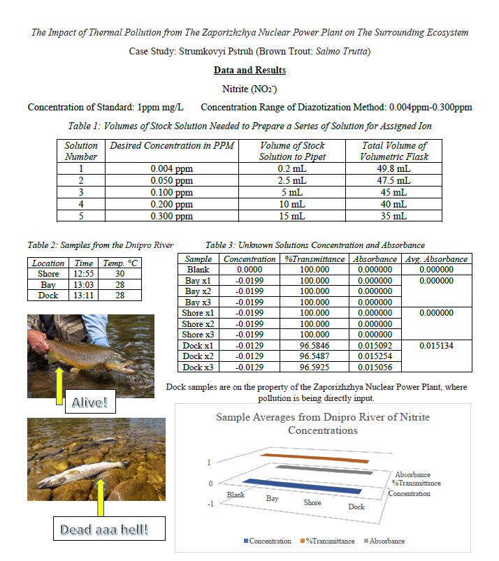

The TLF aims to terminate any and all infrastructure activities that produce chemical pollutants and warm water runoff. Zaporizhzhia has a long-standing history of piping high temperature waste water directly into local streams and rivers. The ecological impacts on trout life histories and reproduction are immeasurable. Similarly, chemical pollutants from post turbine treatments have caused the drastic decline of native fish populations via bioaccumulated toxins that prevent protein processing and mass retention. Finally, the entrainment and entrapment controls for ZNPP’s water intake systems have proved inadequate.

Russian forces view this facility as a vital means of continuing the occupation of X-Region. By perpetuating dam industrialist agendas, YOU are complacent in the decline of our unmolested waterways and the liberty of our people. The Aral Sea, Norilsk, Black Sea, Kerch, how many more ecological disasters are needed before action is taken? NATO is no savior either. The United States and its Global War on Trout have proven to put oil refinery and baseless political squabbles over the will of the people and God’s nature. Since the 19th century, dam industrialists across what is now NATO have oppressed trout by creating reservoirs, coal ash pollution, and microplastic runoff. The trout brothers of our waterways have long suffered under the oppression of nuclear and chemical waste. Now that the Russian occupiers have entered our land, we have experienced only a fraction of their hardship. The present choice is clear. We will not roll over to those who would destroy our pristine waterways; be they Russian or NATO. The TLF will infiltrate, overpower, and retain ZNPP employees who remain complicit in operations after 1200 hours, 08OCT2022. All power generation operations will be shut down until the withdrawal of Russian and NATO assets from the region is complete.
Info-graphics
Click below image to see scientific report on how this is affecting the trout population 